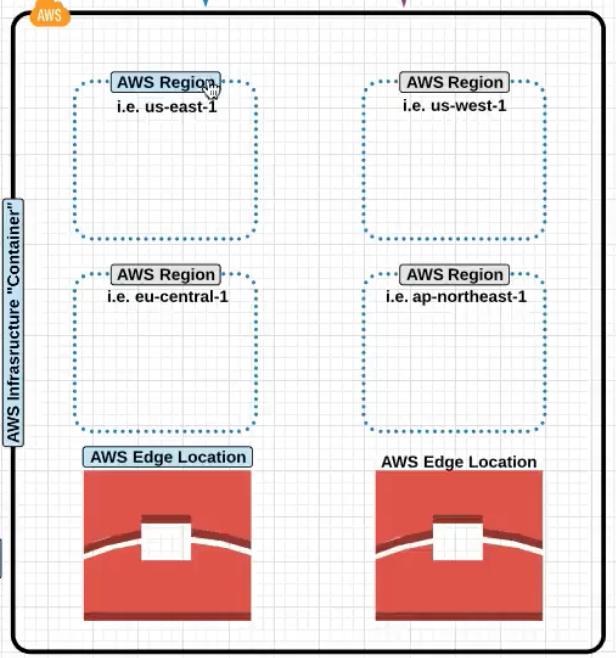

AWS Certified Solution Architect - Associate
- AWS Certified Solution Architect - Associate
Introduction
AWS Organisation
AWS Account and Physical Organisation
This represents how how you manage multiple services and account managment.

The above picture shows a organisation of the AWS Users and Groups and the different ways (You can have different groups for
PRODandQA) , Console or CLI they can use to login and manage the AWS Cloud.
Physical Organisation
At a very high level AWS can be broken down into two main blocks
-
AWS Regions: These are grouping of independenly separated datacenters in a specific geographic regions know asAvailabilty Zones. -
AWS Edge Location: It is a Datacenter whic does not contain any AWS Services ; Instead it is used to deliver contents to parts of the world.CloudFront
Not All AWS Services are availaible globally , one of the example of a Global Service is the
IAM
An AWS Region has multiple Availabilty Zones
Now within each Availabilty Zone there can be multiple Datacenters
Availabilty Zones are phyically sperated to each other but have high speed connection between them to provide Fault Tolerance
So as an example
S3is replicated accross allAvailabilty Zonesand allDatacentersfor reliability and high availaibility.

Now as we further move ahead , the VPC is the
AWS Terminology
-
High Availability (HA)This means creating and managing the ability to automatically “failover” to a secondary system if the primary system goes down for any reason as well as eliminating all single points of failure from your infrastructure. -
Fault Tolerancethis means infrastructure that is designed in such a way that when one component fails(be it hardware or software), a backup component takes over operations immediately so that there is no loss of service. -
Scalabilityis the capability to scale out easily. -
Elasticitythe ability to scale-up as well as scale-down
AWS Access Management
Now lets look at the IAM Components where you manager Users, roles and groups, IAM Consistes of :
IAM UserIAM GroupsIAM PolicyIAM RoleIAM API KeysIAM Password Policy
IAM is Global and does not require a region selection.
Now once you have enable IAM , you can use the link show in the picture below to login
IAM Policy
An IAM Policy , looks like this. Note that Deny will have a precedence over Allow.

An example of where you can see the policy in detail and whats how it is organised

IAM groups
Groups are like AD Groups in a company where you segregate users into respective division , like HR, Finace etc .
So now the policies can be attached to the groups directy.
IAM Roles
-
Look at the example below and notice how that all the Users and Roles are created at the IAM Level.
-
Non AWS Account Holder: Now what we integrate AWS with the AD in a company. The users from AD who are authenticated via SAML now need to be mapped toRoleto be able to do things in the AWS -
EC2 instance needing access to S3
-
An EC2 instance can only have one role attached to it .
Role Assumption
Now lets say , the users below in the DEV group need access to the resources in the PROD, then can assume a Role and be able to access the resource in PROD.
How does the above assumption happen?
An IAM Policy is attached to an IAM Role which is then assigned to the User or Resource which needs acces.

Notice in the screenshot below , we have 3 different types of Roles:
AWS Service Roles: Like EC2 accessing S3Role for Cross Account access: Allowing access forDEVIAM group toPRODRole for Identity Provider Access: Federation and SAML , Facebook, Google.
Security Token Service
This a temporary credetials which allows access to the AWS Resource.
So in the example of EC2 accessing S3 and STS is generated for the EC2 instance.
The benefit is that the credetials are not required to be embedded in the application.
STS times out / expires after certain time period.
IAM API Keys
These are the API Keys like openstack which enables programmatic access to the AWS APIs.
AWS Networking
VPC
Virtual Private Cloudis the networking is architected in the cloud.
-
Now lets take a deeper dive into VPC ad look it under the hood.
VPCspansAvalaibility ZonesandMultiple Datacenters.Now take a look at the picture belpw and see what the a dissection of VPC looks like internally.
- Notice how the VPC spans the two different AZs in the picture.
- Notice the private subnets e.g
172.16.0.0spanning two different AZs. This enables you to design and put your servers in different failure domains enabling High Avalaibility - You can define custom
CIDRin each subnet. - You can create routes between the Subnets.
- You can also have subnet level firewalls and access rules.
Typical VPC screen
-
Notice on the left the different networking constructs you have to work and play with üòÉ

VPC Routing Basics
-
Now lets take a look at a deeper level on the VPC Routing Basics the
Internet gateway,Subnetsand theRouting table.-
Internet Gateway: The is a default internet gateway connected to the default VPC. It is horizontally scales in the backend and there is no need to manage the bandwidth and capacity of the same. It has built in Fault tolernace at the Amazon Networking level.We dont have to manage
Internet Gatewaysbandwidth, AWS Does that for us.Again , you can only have one Internet Gatewat attached a VPC.
Notice the attached
Internet Gatewayto the VPC in the picture below.
Now take a look at the
Route Tablein the picture below and how0.0.0.0is mapped to theInternet Gatewayfor all outbound internet traffic. -
Subnets: After creating VPC, you can create one or more subnets in eachAvailabilty Zone. Each subet much reside in one Availaibilty Zone and cannot span differentAvailability Zone.So VPC spans Availabilty Zones but Subnet are contained in one Availabilty Zone.
IMPORTANT NOTE :
Subnetsare associated toRoute Tablesand theRoute Tablemay or may not be attached to anInternet Gateway
The following association is show in the picture below .
Subnet ---> Route Table ---> Internet GatewayExplicit Associationis when you move the route tables from default to the one which you created.High Level AWS Networking Internal Architecture

-
VPC Security
-
Network ACLsallowordenytraffic at the subnet level and are stateless, which means that the return traffic had to beALLOWEDfor traffic for both direction.This follows at the Cisco ACL
access-listorder charecteristics. -
Security GroupsJust like Openstack Security groups but they are statefull . Security group only supportsallowrules.
VPC Workflow
- Create the
VPCand give it aCIDRBlock range. Notice that you can also defineIPv6CIDR ranges. WhenTenancyis set to dedicate you are not sharing your servers with the other users.

- Create the
Internet Gateway

- Attach the
Internet Gatewayto theVPC

- Next we will create two different
Route Tables, one which is connected to theInternet Gatewayand the other which is not connected.

Now connect theRoute Tablecreated above to theInternet Gateway. If you leave theRoute Tablenot connected to theInternet Gatewayit becomes a private route table.
- Now Create a
Subnet. Notice that you have to specifically define theAvailabilty Zone(a subnet can only span an AZ) and theCIDRblock range which is within the range of the VPC.

- Now you can create the Network ACL which is a straight forward process.

VPC Limits
- 5 VPCs per region (you can have this increased)
- 5 Internet Gateways per region , this is equal the VPC limit as one VPC can only have one internet gateway.
- 50 VPN Connections per region.
Server-Based Compute Services
EC2 Limits
-
Take a look at the default EC2 Limits :

EC2 Purchasing Options
-

Workflow : Choose
AMI--> ChooseInstance Type
There are 3 different types of EC2 Instances :
-
OndemandMost expensive , run and destroy whenever you like. You care billed as per persecondor perhour. These differ based on Images too , not all images support per second basis. Amazon LinuxorUbuntuoffer per second pricing.Note that if the image is stopped you are not charged for the same.
-
ReservedAllows you purchase instance for1or3years and you get discount becuause of the commitment. But here you pay the whole amount regardless of how much you use it. You can pay upfront partial partial and no upfornt -
SpotIn this case prices of instances fluctuate based on what AWS considers is unused capacity in their datacenters. In this case you the billing happens like theOndemandinstance.And instance is provisioned for you when your bid price is less than or equal to the instance price. If the AWS's price increases your instance is terminated.
If the instance is terminated by AWS you dont pay for that slot of duration (1 minute or 1 hour) . If you delete it, you pay for it.
Linux AMI Virtualisation Type :
-
HVMHardware Virtual Machine , Conside this like Intel VTx/d technology by which guests can take advantage of virtualisation feature supported by the CPU. Proved enhanced networking and GPU processing to the VM. -
PVParavirtual AMIs Guests could run on Hardware which does not have HVM support. cannot take advantage of GPU / Advanced networking.
EC2 Instance Type :
Has the following virtual hardware components, you have to choose the right instance type based on your application requirement :
-
vCPU -
RAM -
Storage Options -
Network PerformanceNotice in the picture below the above characteristics.

Different Instance types
EC2 Instance Metadata
-
http://169.254.169.254/lates/user-dataShows the user data provided for bootstrapping. -
http://169.254.169.254/lates/user-dataDisplays AMI, Instance Type etc.
EC2 Instance Storage types
EBS Elastic Block Store ,
- EBS Volumes are persistent and can stay even after instance deletion, unlike Instance Store.
- Can only be attached to one instance a time.
- EBC can be backed up into snapshots. These snapshot can later be restored to EBS volume.
- EBS Volume measures performance in IOPS , AWS one IOPS is 256KB chunk (input or output)
- Even with provision IOPs you may not get the performance you want, you may want to choose an instance type which is EBS optimized instance type.
- New EBS volume no longer need to be pre-warmed. Maximum performance is received as soon as the EBS volume is spawned.
- Now with the above point note that if you created a volume from a snapshot you still need to warm-up (read all the storage blocks)/ read otherwise the access could be slow.
Different EBS types
General Purpose(1GiB - 16TiB), best used for Dev and Test environment. This allows 3 IOPS/GiB (so size of the disk has direct relation with the IOPS) but is burstable upto 3000 IOPS.Provisioned IOPS SSD(4GiB - 16TiB) , Used for mission critical applications. This performs at the provisioned IOPS level and can go upto 20,000 IOPS.MagneticRarely used , slow .
Now there is another type of store different than EBS :
Instance Storevolumes are ephemeral data. The data on the volume only exists till the life of the instance. If the instance is stopped or shutdown the data will be lost.
If the instance is rebooted the data is retained.
EBS snapshot
- You can take a snapshot to recreate the volume. Snapshots are stored in S3. You are only charged for the difference between the snapshots.
Placement groups
Instances must have 10G connection type to be able to use Placement Groups.
-
When there is a requirement to keep the instances as close possible to other instances a placement group is used. Like
Affinity Groupsin Openstack.Instances not created in a Placement group cannot be moved into a placement group.
A placement group cannot span AZs.
EFS Elastic File System
- Consider this like NFS , this can be shared between multiple EC2 instances.
Serverless Compute Services (AWS Lambda)
-
You do not need EC2 servers (Serverless) to run your application , you can directly run your programs here !
A picture says a thousand words :

When should you run Lambda
You are only billed for the duration your code is running.
Generally you will run Lambda when you want a function to run in response to an event.
Example Lambda Use :
Upload Object to S3 --> S3 Event --> Triggers a Lambda Function
Quick Detour
CloudWatch (Monitoring)
- Used to monitor AWS Services such as EC2
- Provides centralised monitoring and performance mentrics.
- CloudWatch Alarms can be used a triggers.
CloudTrail (API Logging Service)
- Logs all API calls.
SNS Notification Service
- Automates the process of sending notification email or text . SNS is integrated in many AWS services so it is easy to use it.
Advanced Networking
If you notice in the picture below , we have now added a load balancer and an autoscaling group which now spans two vPCs .
Elastic Loadbalancer : EC2 Service which loadbalances traffic to multiple EC2 instances across multiple Availabilty Zones.
-
Also
Elastic Loadbalancershould also be paired withAuto Scaling Groupfor High Availabilty. -
There could also be an Internal Elastic Loadbalancer for loadbalancing traffic internally within private subnets.
-
Elastic Loadbalancer can also stop sending traffic to a non responding instance based on
Health Checks. -
It can an also do the SSL Encryption and Decryption at its level , instead of these certificates installed at the instance level.
Auto Scaling Group : Automates the process of increasing or decreasing the amount of provised on-demand instances availaible for your application.
- Auto Scaling can increase or decrease the amount of instances based on
CloudWatchmetrics.
Auto Scaling has two main components :
Launch Configuration: The template of the instance which will be launched.Auto Scaling Groups: All the rules and setting which defines the trigger for when the instance will be created or deleted.
- Number ofMINandMAXinstances allowed.
- VPCs and AZs to launch instances into.
For an architecture to be considered highly availaible and fault tolerant it MUST have an ELB service traffic to an Auto Scaling Group with a minimum of two instances in separate AZs.
Workflow
It makes sense to create the Target Groups first and then the Load Balancers
In the example below we are creating the following scenario and based on the content (pictures or videos) in the URL and route based on the same.


- Create a Target Group

- Add Target (instances) to the target group


- Configure the Load balancer
- Add the Target group created in step 1

- Note that we have now the DNS name of the loadbalancer which can be accessed to access the service:

- Additionaly when the Load balancer is created we can edit the rules for more advanced rules and routing:

Example is , that any time the path contains pictures we can forward it to the pictures target group , similary another group can be created for videos:

Service Traffic to and from Private Web Servers
Bastion Host: A terminal server for getting into instance in the private subnet.
NAT Gateway : For providing internet access to the instances in the private subnet.
NAT Gateway is without an actual instance doing the NATing and NAT Instances uses an actual instance.
ELB Troubleshooting
-
Loadbalancing is not occuring in multiple
Availaibility Zones
Enable Cross-Zone Loadbalancing

-
If the Instance not coming up as health in the AWS, Check the ping protocol and make sure it is right.

-
Also check the security group setting of the ELB to ensure if it has the right ports allowed for the communication

-
Access Logs show IP Address of ELB and not the source traffic. For this to work configure the S3 Access Logs in the picture below.

-
Unable to add instances from a specific subnet . In this case you need to make sure that the AZ of the instance in question should be listed in the
Edit Availabilty Zoneand then it will appear inEdit Instances.

Auto Scaling Troubleshooting
-
An Auto Scaled instance continues to Start and Stop or
Create/Terminateinstances in short intervals.
This could happen if thetriggeris too close for example CPU threshold< 30 , > 40 -
Also keep a note of
Maxinstaces as this may not let you spin more instances.
Storage Services
Notice the Transit service which are responsible for sending data in and out of S3 and Glacier.
Differen components of S3
S3 Permissions
Bucket Policies These are the permissions which are direclty assigned to the S3 Bucket . These are called Bucket Policies.
S3 Access Control List : For Public Access or AWS authenticated user.
S3 Storage Class
Object Durability : The percent the object is goign to be there. Not goign to be deleted or corrupted.
Object Availaibilty : Availaible for Access.
Different types of S3 Storage :
Standard: Durability : 99.999999999% Availabilty : 99.99%Standard Infrequent Access: Durability : 99.999999999% Availabilty : 99.90%Reduced Redundancy Storage: Durability : 99.99% Availabilty : 99.99%Glacier: Durability : 99.999999999%. Following are the recovery options :Expedited: 1- 5 minutes.Standard: 3-5 hours.Bulk: 5-12 hours.
To move object to Glacier you have to use
Life Cycle Policies
S3 Versioning
By default versioning is disabled on all objects. Once enable it cannt be disabled completely , but stopped for future objects.
Versioning can only be setup at the bucket level.
S3 Lifecycle managment
In the example below , we are moving the object to Infrequent Access to Glacier.
S3 Event Notification
Allows you to setup automated communication between S3 and other AWS services when a selected event occurs.
Event can be sent to SNS, Lambda, SQS Queue
S3 Static Web Hosting
Mainly lets say if your servers are unreachanble , they can atleast get a page notifying your company message rather than a 404.
CORS / Cross Origin Resource Sharing
Sharing accross wed domains
To be able to share information between two different buckets for two different domains CORS have to be enabled.
Multipart Upload
Uploading files in pieces , highly suggested when objects are bigger than 100MB
AWS Import Export
You send a physical device to AWS which AWS Uploads for you .
Snowball
AWS Send you a transfer appliance which you can copy your data to to send .
This is for PB Scale data.
Storage Gateway
Storage